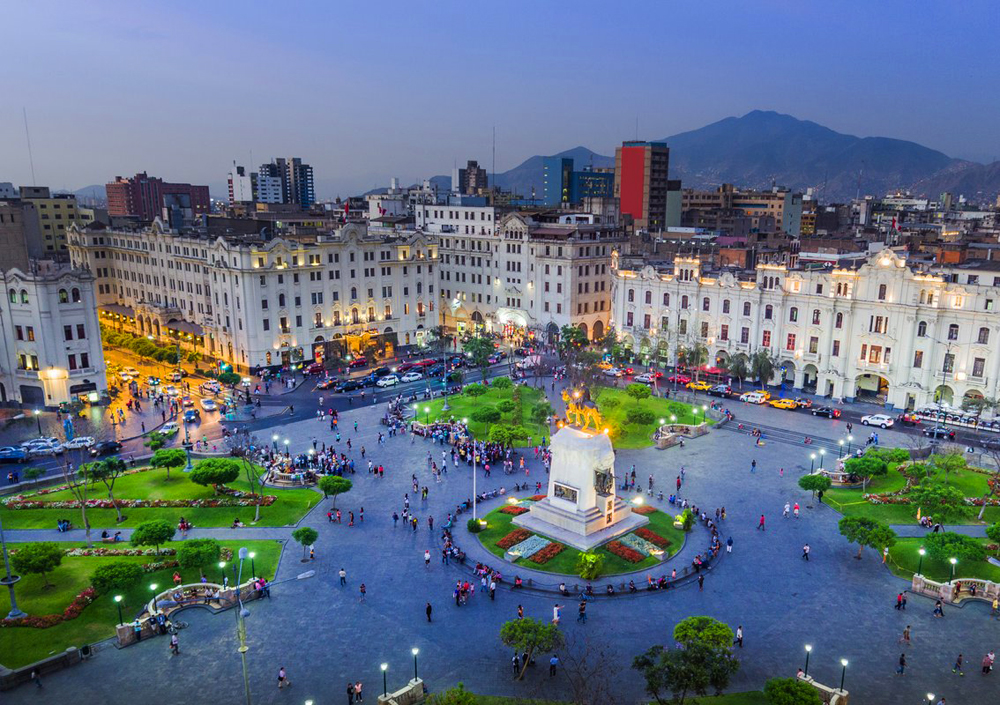

2018 Congress
Lima, Peru
The International Society for Universal Dialogue (ISUD) held its 12th World Congress in Lima, Peru from 10 July until 15 July, 2018. The hosting institution was the Pontifical Catholic University of Peru (Pontificia Universidad Católica del Perú, PUCP).
The theme of the 2018 Congress was Philosophy in an Age of Crisis: Challenges and prospects.
The goal of the Congress was to promote dialogue concerning various crucial philosophical issues in today’s world and to explore the role of philosophy in our complicated times. The world we live in today faces many urgent issues that require sustained and productive cross-cultural dialogue. The ideals of global peace and security remain elusive while a sense of uncertainty pervades the dominant institutions of contemporary life.
Traditional human values underlying our social and political institutions are continually transformed by new developments in information technology, digitalization, artificial intelligence, and the drive for economic efficiency. Although the globalization of trade and technology has brought people together as never before, our differing outlooks, habits, and ideologies continue to separate us.
Philosophers and scholars who attended the congress discussed the following sub-themes.
Philosophic innovation in a Promethean era
The ivory tower and social involvement
Cross-cultural dialogue and the building of common humanity
Learning to be human in an age of crisis and uncertainty
The Digital Revolution and the post-human
The benefits and threats of technicization and science
The status and roles of knowledge in the contemporary world
Religion, philosophy, and society
Art and morality in the contemporary world
Nationalism, populism and the challenge to universalism
Globalization, anti-globalization or glocalization
Cultural diversity and universal harmony
Cosmopolitanism and transnationalism
Ecology and environmental justice
Gender issues in family, workplace, and cultural contexts